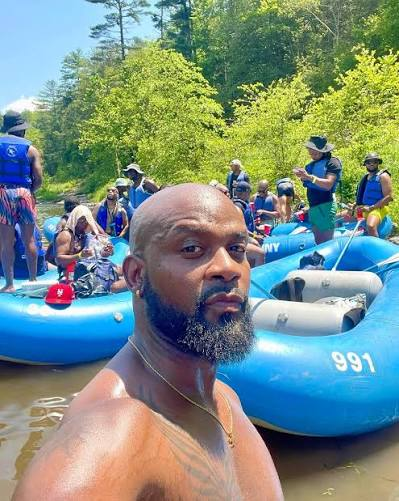

Vincent Rafting Company is one of the wide ranged white water rafting organization with services to aid human from danger to safety from water



Vincent Rafting Company is one of the wide ranged white water rafting organization with services to aid human from danger to safety from water
In the early days of 2005, Vincent Rafting Company came together as a team as four men who collided their creativity, sat down as they made meaningful plans to establish what is popularly known to be the modernized VINCENT RAFTING COMPANY. Equipments such as safety gears,professional flotation devices (PFDs) and every other tools needed to run the company such as wears like wetsuits or splash jackets and logistics for navigating river rapids were made available. The company made their first achievement as of 2010, when an adventure was organized by a huge company that needed a vacation trip and that had us on the call to answer and their safety was at the core as a result of the long trip from river to another river for all the employees from the company.